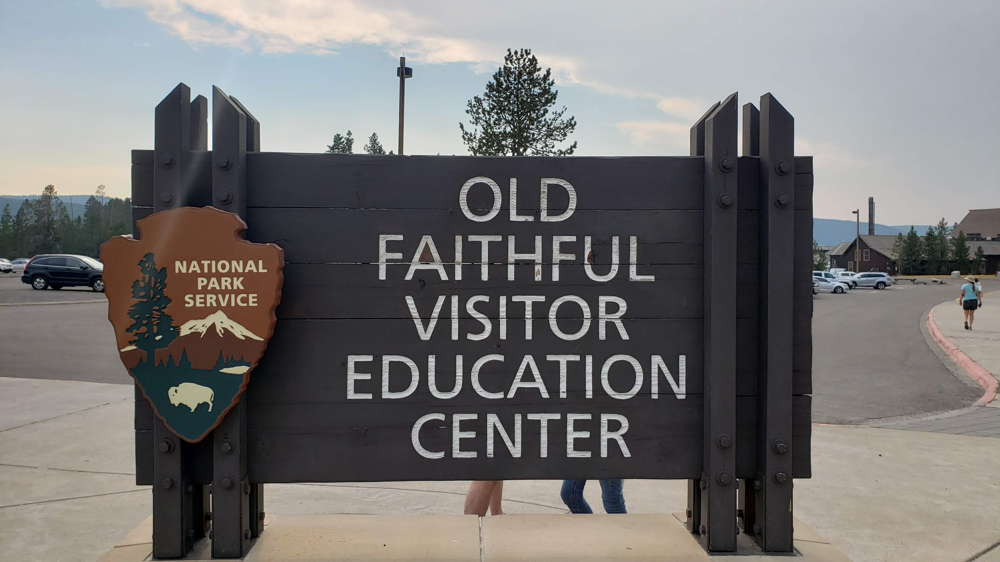

Yellowstone National Park Tour
Posted on Sun 14 January 2024 in Rides
| Distance | : | Ride Time | |
|---|---|---|---|
| VARIED | : | VARIED | |
On March 1, 1872, Yellowstone became the first national park for all to enjoy the unique hydrothermal and geologic features. Within Yellowstone's 2.2 million acres, visitors have unparalleled opportunities to observe wildlife in an intact ecosystem, explore geothermal areas that contain about half the world’s active geysers, and view geologic wonders like the Grand Canyon of the Yellowstone River. The Unbound Nomad tailors custom vacation packages to the park based upon your desired lodging, and sightseeing selections and length of stay. These packages are all-inclusive and cover lodging, food, and any admissions required for the duration of your adventure. There are no predefined routes for this tour as it is one of the most customized packages offered.
